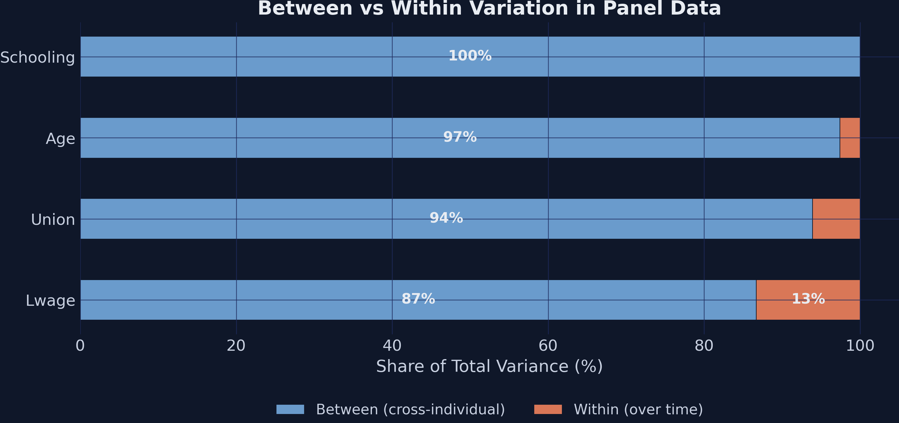
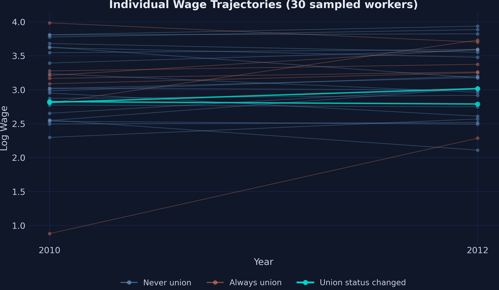
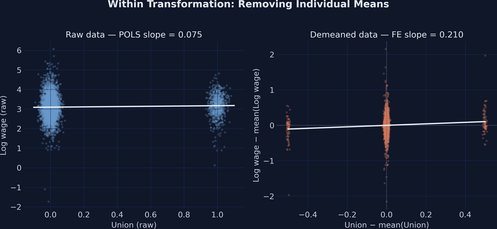
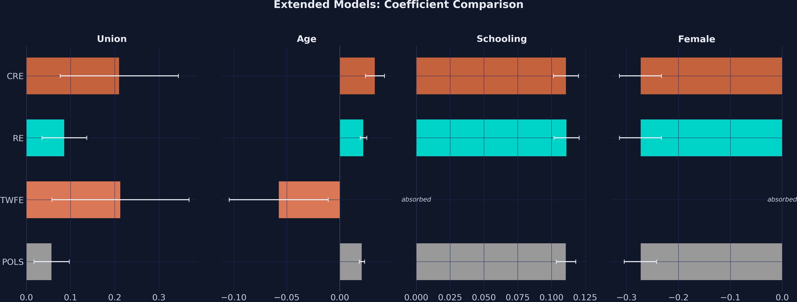

Treatment — union membership; only 16.3% unionized in any period
Window — restricted to 2010 and 2012, so \(T = 2\) and the panel is balanced
With \(T = 2\), every worker contributes exactly two rows — the cleanest setting to see that first-differences and the within estimator are the same thing.
Each estimator chooses which variation to believe
Cross-sectional camp
POLS — ignores the panel
Between — worker means only
RE — GLS-weighted blend
Answers: “union vs non-union workers?”
Within camp
FD / FDFE — period differences
FE / TWFE — demeaned data
CRE / Mundlak — the bridge
Answers: “same worker, switched status?”
Hausman and the Mundlak term are the formal tests for choosing between the two camps.
94% of union variation is between workers — only 9.1% is within

Between vs within variance shares for the four key variables. Union is 93.9% between; schooling is 100% between (zero within).
Only the workers who switch status identify the within estimators

Log-wage trajectories for 30 sampled workers. Teal lines change union status; orange/blue lines never do.
Pooled OLS — the naive baseline — reports a 7.5% premium
The worker-specific effect \(\alpha_i\) — ability, schooling, gender — cancels in the subtraction. What is left is identified only by workers who changed union status.
FDFE \(= 0.2113\) (SE 0.079); the SE is \(3.4\times\) larger than POLS — the switcher-only signature.
The within transformation demeans the data — and the slope steepens to 0.21

Within transformation: raw scatter with the shallow POLS slope (left); demeaned scatter with the steeper FE slope through the origin (right).
Three recipes, one number: FD, demeaning, and dummy FE all give 0.2103
fit_fe = pf.feols("lwage ~ union | ID", data=df, vcov="HC1") # absorbed FEfit_dvfe = pf.feols("lwage ~ union + C(ID_str)", data=df, vcov="HC1") # 2,198 dummies# Both → 0.2103; FDFE → 0.2113 (the +0.001 is an intercept-driven year trend)
Within transformation, first-differences, and dummy-variable FE are three recipes for the same dish. Absorption (| ID) is just the fast one.
Two-way FE absorbs year shocks and lands at 0.2129 — closing the FD–FE gap
fit_twfe = pf.feols("lwage ~ union + age | ID + year", data=df, vcov={"CRV1": "ID"})# Union coefficient: 0.2129 (SE 0.0793)
Absorbing the year effect removes the aggregate wage trend FD’s intercept was capturing. Time-invariant regressors (schooling, female) are silently absorbed.
Random effects bets on no-correlation — and is pulled toward POLS at 0.109
RE is a variance-weighted average of between and within. With only 9% within, it leans toward the between picture — and SE is \(2.7\times\) tighter than FE.
The Hausman test fails to reject RE — but only because FE is noisy
Add each worker’s mean union exposure \(\bar{x}_i\), then run RE. The within coefficient \(\beta\) equals FE; the mean coefficient \(\gamma\) tests whether \(\alpha_i\) correlates with \(x\).
CRE within \(= 0.2103\) (matches FE exactly); Mundlak term \(\gamma = -0.144\), \(p = 0.072\) — borderline, hinting at negative selection.
The Resolution
Act III
Within-worker, joining a union pays 0.21 log points — nearly triple the naive 0.075
0.210
\(\hat\beta_{\mathrm{FE}}\) on union (SE 0.081) — vs pooled OLS 0.075; FDFE, TWFE, and CRE all agree near 0.21
Two camps, three-fold apart — and the gap is selection, not noise
Method
Coef
SE
Variation used
POLS
0.0750
0.0231
all (ignores panel)
Between
0.0662
0.0311
cross-sectional means
RE
0.1092
0.0299
GLS between + within
FDFE
0.2113
0.0792
within differences
FE
0.2103
0.0812
within demeaned
CRE
0.2103
0.0703
RE + Mundlak (= within)
Cross-sectional 7–11% · within ~21%. Standard errors swing inversely — the within camp is noisier but causally cleaner.
Adding controls leaves the four-camp gap intact

Extended models — union, age, schooling, female across POLS / TWFE / RE / CRE. The within premium survives controls.
Does FE make this causal? No — strict exogeneity still carries the weight
Objection. Within estimators just net out fixed traits — they can’t manufacture identification.
Response. Correct. FE/FDFE/TWFE/CRE target the ATE for union switchers only — and only under strict exogeneity given the worker fixed effect.
In low-power settings, lead with CRE/Mundlak — it dominates Hausman
p = 0.072
Mundlak term — borderline, more honest than Hausman’s confident p = 0.180 “fail to reject”
Let the within variation, not the pooled average, tell you what a treatment does.